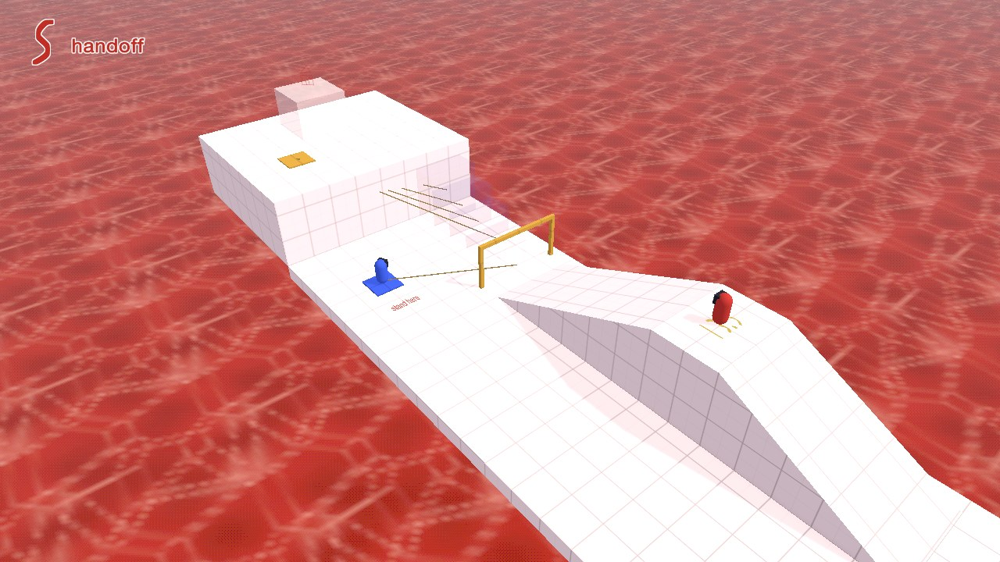
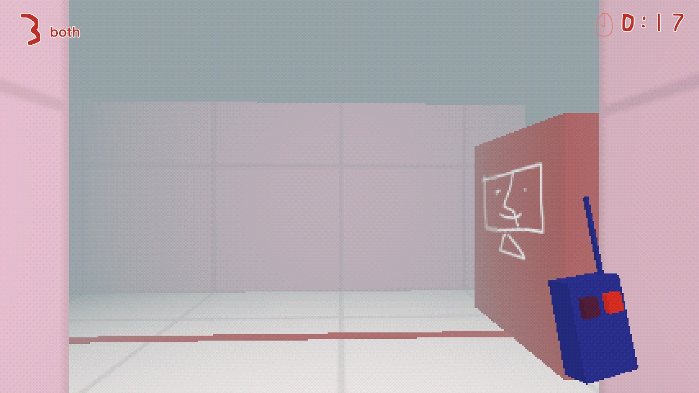
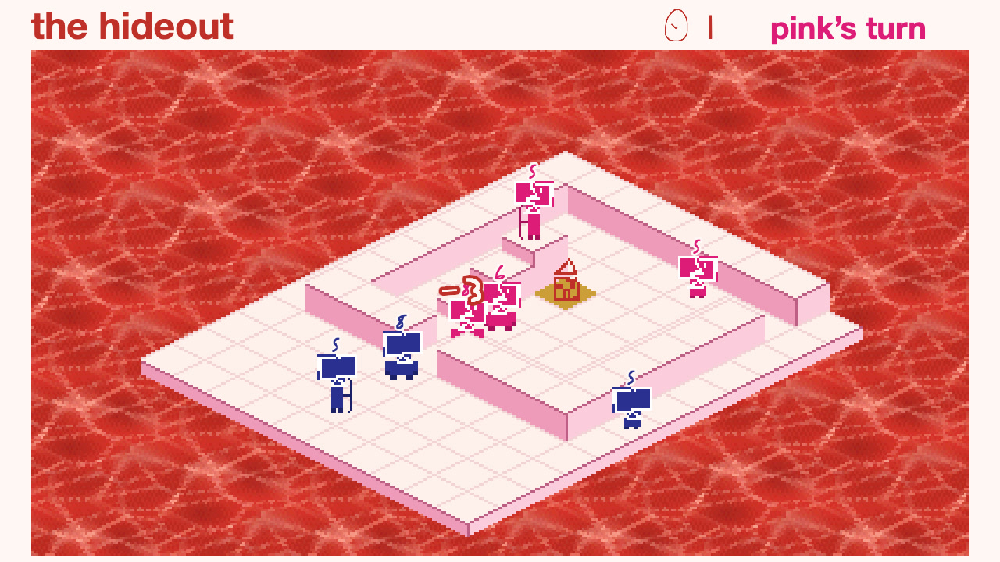

handoff
First-person co-op movement puzzles. One of you holds the way open for the other.
game designer and music technologist

First-person co-op movement puzzles. One of you holds the way open for the other.

Two characters slide on red water until something stops them. Often the something is the other one.

A level you find your way through by ear. Fog hides everything past six metres.

Turn-based tactics on three small maps. Each map is built around one idea.

Three players on a circle of twelve notes. The triangle between them is the chord.
I am a graduate student in music technology at NYU, and I spent ten years as a recording and live sound engineer before that.
This semester I am in a multiplayer games class, building online games in Unity.
Each of these five has its levels as plain text, a map drawn from them, and an automatic check that the levels work. Triad is an older game of mine with taught stages added. I had the help of AI tools in building them.